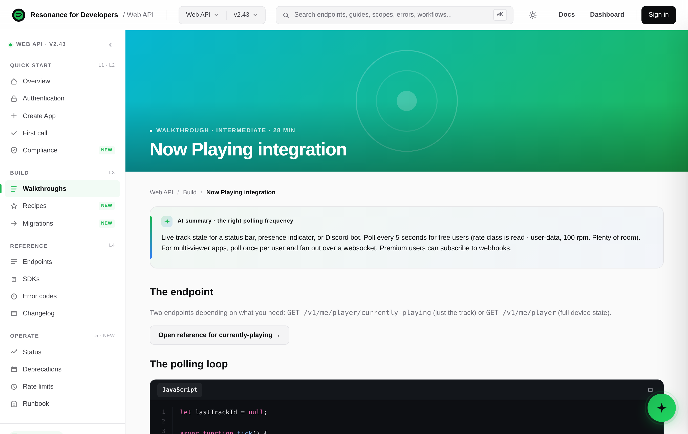

A portal is five jobs. This one did one.
Developers move through five cognitive layers when they work with an API: discover, onboard, implement, reference, operate. The portal was a strong reference surface and almost nothing else.
An evidence-led audit walked the live portal as a system, not a screen-by-screen comment trail. The pattern was structural, not cosmetic: the layers developers rely on most at the start and the end of their journey, discovery and operation, did not exist.
Re-layer, do not re-skin.
The colors were never the problem. The information architecture was. The portal organized itself around content types, endpoints and models, when developers organize their work around tasks. So the redesign rebuilt the four missing or broken layers around developer intent, with one move carrying the most weight.
Make Operate a first-class layer. Status, errors, usage, deprecations, a runbook. The same single move resolves the three personas who all collapsed at the same absent layer: the maintainer on call, the same developer six months into production, and the platform engineer in procurement. No other change in the audit had that leverage.
The leverage, stated honestly.
Every layer, designed.
Six surfaces across the five layers, in the shipped system. Light mode shown here; a full dark theme ships alongside it.


